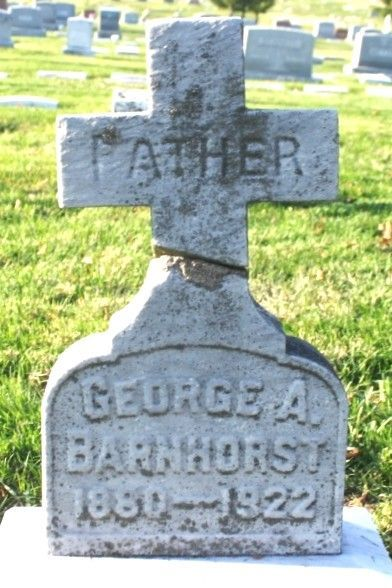
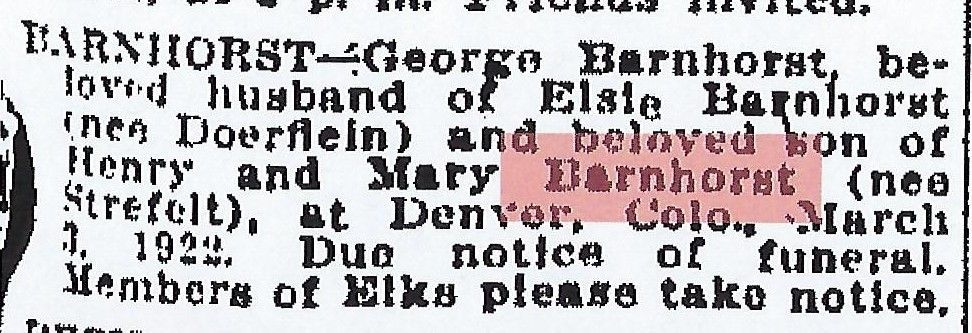

7 July 1880 Born in Cincinnati, Ohio, according to his Find a Grave memorial.
Before 1913 Married Elsie M. Doerflein; the exact marriage date and original marriage record have not been located. His 1922 death notice calls Elsie his beloved wife; Elsie’s 1970 obituary calls him her late husband.
8 November 1913 Son George Anthony Barnhorst born in Cincinnati; the SS-5 transcription names George Barnhorst and Elsie Doerflein as parents.
8 December 1916 Daughter Marie Elise Barnhorst born in Ohio, according to her Find a Grave memorial and its linked Find a Grave Index record.
3 March 1922 Died in Denver, Colorado. A contemporaneous death notice names wife Elsie (née Doerflein) and parents Henry and Mary (née Strefelt). Find a Grave reports burial at Saint Joseph Cemetery, Cincinnati.
Life Story
George A. Barnhorst was born in Cincinnati on 7 July 1880, according to his Find a Grave memorial. His 3 March 1922 death notice says he died in Denver, names Elsie Barnhorst (née Doerflein) as his beloved wife, and names Henry and Mary Barnhorst (née Strefelt) as his parents.
Elsie’s 1970 obituary says she was the wife of the late George Barnhorst and the mother of George Barnhorst and the late Marie Forste. This is direct obituary evidence that Marie was Elsie’s daughter and that George was Elsie’s husband. Marie’s own obituary names a brother George Barnhorst; George Anthony’s SS-5 transcription names George Barnhorst and Elsie M. Doerflein as his parents. Together the records strongly support George A. as Marie’s father and George Anthony’s father, though no direct birth record for Marie naming her father has been inspected.
Photographs & Family Gallery
Grave-marker photo from George A. Barnhorst’s Find a Grave memorial; added by James (Jim) F. Kelly on 21 Jan 2013. Inscription reads “Father · George A. Barnhorst · 1880–1922.”

Second marker view from the same memorial, added by The Lone Ranger on 21 Jan 2026. Preserved as a separate source photo; the earlier photo gives a clearer reading of the dates.

Death notice clipping uploaded to the memorial by John R. Hess on 17 May 2020. Names Elsie as wife and Henry and Mary as parents; issue details are cropped.
George Anthony Barnhorst SS-5 transcription; reports his 8 Nov 1913 Cincinnati birth and names his parents George Barnhorst and Elsie M. Doerflein. Original application not inspected.
Research Notes and Open Questions
Marie relationship: Elsie’s 1970 obituary explicitly identifies her as mother of “the late Marie Forste”; her 1951 obituary names Marie’s mother as Mrs. Elsie Barnhorst and George Barnhorst as Marie’s brother. George’s 1922 notice calls Elsie (née Doerflein) his wife. These sources strongly support George A. as Marie’s father, though no record directly states “George was Marie’s father.”
Vital facts: Find a Grave memorial and the clearer 2013 marker photo support 7 Jul 1880–3 Mar 1922; the death notice independently dates his death and says Denver. The 2026 marker image is a second view; keep both images with original credits.
Parents and siblings shown in Find a Grave family links are compiled memorial relationships: Henry F. Barnhorst and Mary A. (Strefelt) Barnhorst; siblings John H., Joseph Herman, and Julia E. Shumard. Separate profiles for Henry and Mary were added on 27 November 2026; the siblings remain unprofiled.
His death notice clipping has no visible newspaper name or issue date. No civil marriage record for George and Elsie has been located; the obituaries establish them as husband and wife but do not give their marriage date.
George Anthony’s SS-5 transcription is derivative, but the saved memorial/obituary evidence independently lists him as their son and Marie’s brother. No separate sibling profile was created.
Next: locate original birth, marriage, death, and census records if accessible; recover the newspaper issue citation for the death notice. Keep uncertain identities explicit.
Updated 23 November 2026: added the death notice, full grave-marker images, and linked parent/child evidence. The Marie parent link remains probable, not established by a direct birth record.
Updated 27 November 2026: linked the parent names to their new individual profiles, added those profiles to Gen VIII, and preserved the existing Gen VII placement.
Edit or add to profile
No verified profile-contribution link is currently attached to this page.